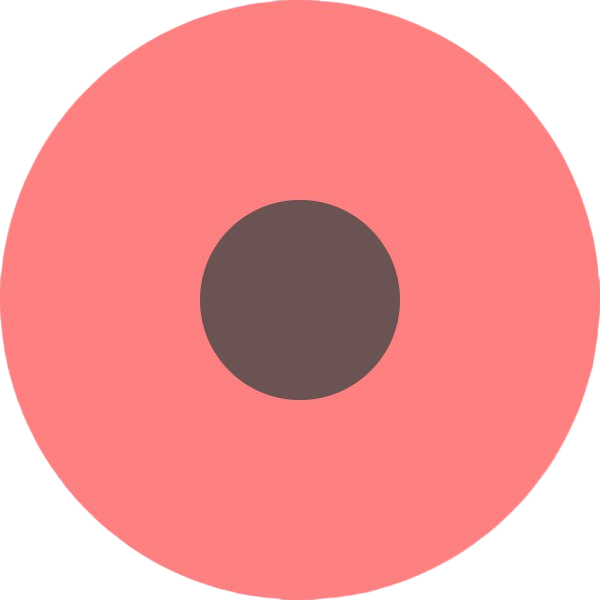

<!DOCTYPE html>
<html lang="en">
<head>
    <meta charset="UTF-8">
    <meta name="viewport" content="width=device-width, initial-scale=1.0">
    
    <script src="https://maps.api.2gis.ru/2.0/loader.js?pkg=full&skin=dark"></script>
    
    <link rel="stylesheet" href="https://unpkg.com/leaflet.markercluster@1.4.1/dist/MarkerCluster.css" />
    <link rel="stylesheet" href="https://unpkg.com/leaflet.markercluster@1.4.1/dist/MarkerCluster.Default.css" />
    <script src="./points.js"></script>
    
    
    <link rel="stylesheet" href="./style.css">

    <title>Document</title>

</head>
<body>
    <div id="map" style="width:100vh; height:100vh"></div>

</body>

<script type="text/javascript">
    var map;

    DG.then(function() {
                // загрузка кода модуля
                return DG.plugin('https://unpkg.com/leaflet.markercluster@1.4.1/dist/leaflet.markercluster.js');
            }).then(function() {
        
        map = DG.map('map', {
            center: [43.241025, 76.957485],
            zoom: 13
        });

        DG.control.location({position: 'bottomright'}).addTo(map);
        DG.control.scale().addTo(map);
        DG.control.ruler({position: 'bottomleft'}).addTo(map);
        DG.control.traffic().addTo(map);

        your_locationIcon = DG.icon({
                    iconUrl: './your_location.png',
                    iconSize: [24, 24]
        });

        catec_collegeIcon = DG.icon({
                    iconUrl: './catecCollege.png',
                    iconSize: [48, 24]
        });
        
        benchIcon = DG.icon({
            iconUrl: './benchIcon.png',
            iconSize: [24, 24]
        });

        DG.marker([43.251025, 76.957485], {
                    icon: benchIcon
        }).addTo(map).bindPopup('Скамейка 1');

        DG.marker([43.251025, 76.967485], {
                    icon: benchIcon
        }).addTo(map).bindPopup('Скамейка 2');

        DG.marker([43.231025, 76.957485], {
                    icon: benchIcon
        }).addTo(map).bindPopup('Скамейка 3');

        DG.marker([43.241025, 76.957485], {
            icon: catec_collegeIcon
        }).addTo(map).bindPopup('Центральноазиатский технико-экономический колледж');

        map.locate({setView: true, watch: true})
                    .on('locationfound', function(e) {


                        DG.marker([e.latitude, e.longitude], {
                            icon: your_locationIcon
                        })
                        .addTo(map)
                        .bindLabel('Я обычная подсказка!')
                        .bindPopup(
                            '<p>Привет мир!<br />Это попап.</p>     ');
                    })
                    .on('locationerror', function(e) {
                        DG.popup()
                          .setLatLng(map.getCenter())
                          .setContent('Доступ к определению местоположения отключён')
                          .openOn(map);
                    });
    
        var markers = DG.markerClusterGroup();

                // обработка координат для установки маркеров
                for (var i = 0; i < addressPoints.length; i++) {
                    var a = addressPoints[i];
                    var title = a[2];
                    var marker = DG.marker([a[0], a[1]], { title: title });
                    marker.bindPopup(title);
                    markers.addLayer(marker);
                }

                map.addLayer(markers);
        
        
    });
</script>

</html>